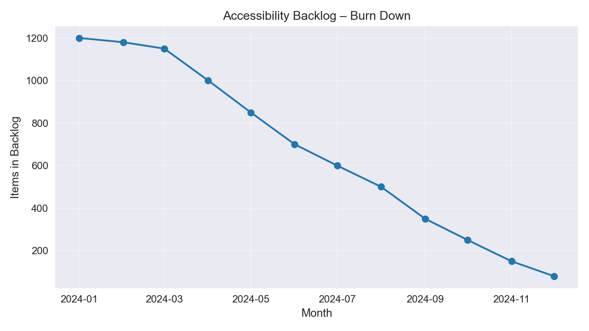
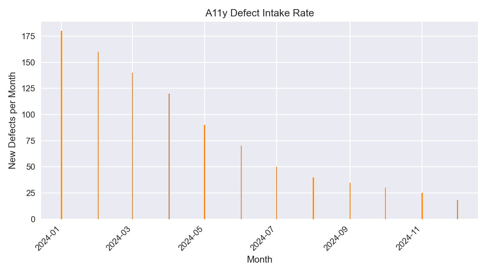
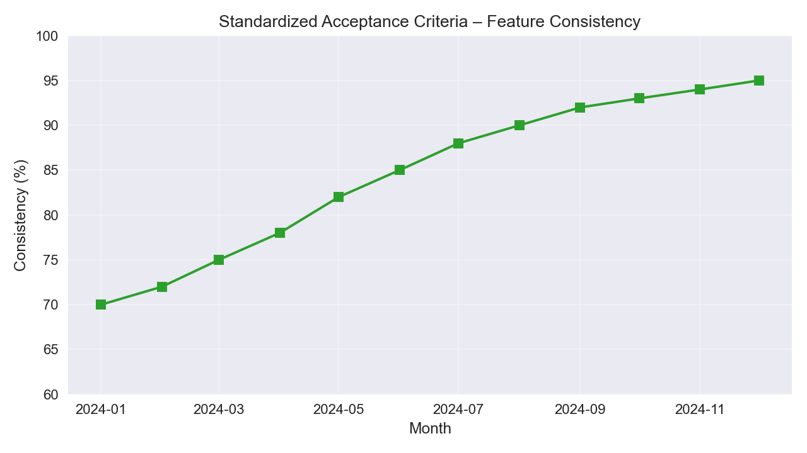
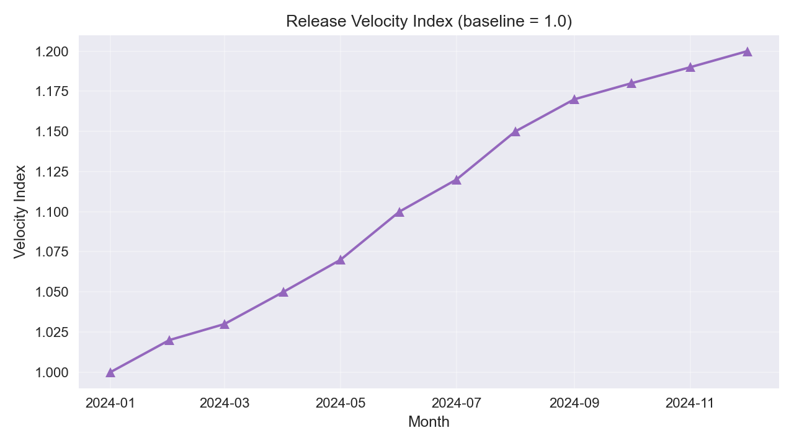

Overview
While supporting the Bing search platform at Microsoft, I led a targeted accessibility (A11y) execution initiative to stabilize release quality, reduce defect intake, and improve compliance. The effort addressed fragmented ownership, inconsistent acceptance criteria, and a rapidly growing backlog of accessibility issues.
Visuals




Role & Approach
- Owned delivery cadence, backlog health, and cross‑team coordination.
- Defined and enforced A11y acceptance criteria; shifted validation earlier in the SDLC.
- Led a task force to triage and reduce the backlog; removed duplicates and stale items.
- Built leadership dashboards for real‑time visibility on risk and readiness.
Results
- Cleared 1,000+ backlog items
- Cut monthly intake to < 20
- Raised feature consistency to ~95%
- Accelerated release velocity by ~20%
Note: Visuals are derived from synthetic data to preserve confidentiality.